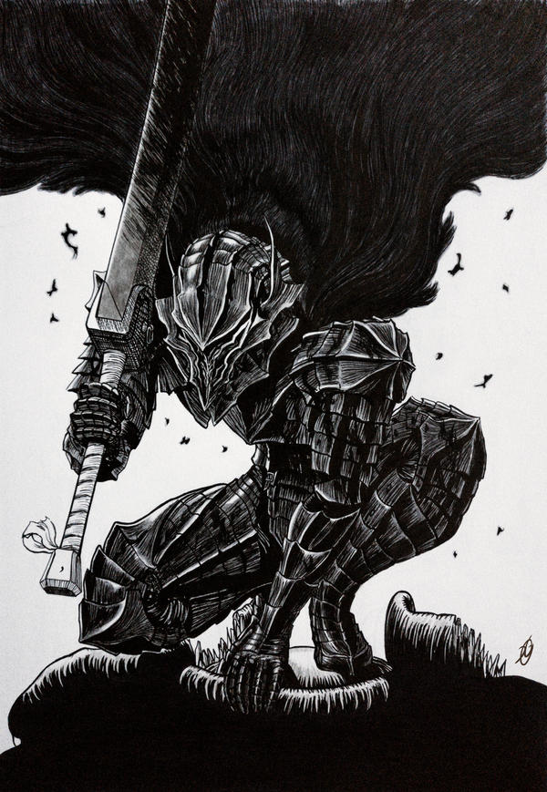
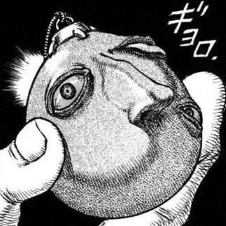
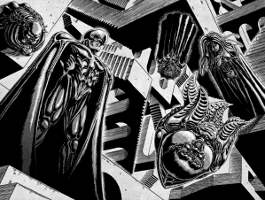

Welcome,
here you can learn some small facts about the dangerous monsters and mysterious objects of Berserk. If you do plan to read Berserk then beware of spoilers
THE BERSERKER ARMOUR
Type: Cursed Armour

The berserker armour is a cursed set of heavy iron that protects the wearer from heavy damage. It increases you pain tolerance immensly, not making it unnoticeable but ignorable. It also closes wounds and mends bones during fighting by forcefully piercing them with spikes. The armour is incredibly powerful but it can and will kill the wearer. It is currently worn by Guts.
THE BEHELIT
Type: Demonic Artefact

Little is known about the behelit. It's egg shape is adorned with a misshapen face. Sometimes it even seems like it's looking at you. A behelit always belongs to someone and sometimes those people don't even know. Their destiny is to use it and they will, usually bringing disaster. May God help you if someone close to you finds a small, crimson behelit attached to a necklace.
THE GODHAND
Type: Demons

Mysterious beings on mystery and evil. They orchestrate terrible events and are manifestations of the sins of our world. They were born from the thoughts of humans and are an all-knowing evil.